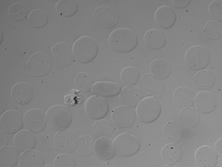
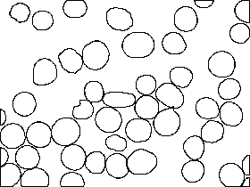

Broad Bioimage Benchmark Collection
Annotated biological image sets for testing and validation
Human red blood cells
Accession number BBBC009 · Version 1
Example images
-
DIC image
-
Ground truth
Images
This image set consists of five differential interference contrast (DIC) images of red bood cells.
BBBC009_v1_images.zip (1.2 MB)
Ground truth O
BBBC009_v1_outlines.zip (86 kB)
There are two options when using this data set to quantify an algorithm's effectiveness. The simplest method is simply to compute the percentage of pixels that your algorithm and the ground truth have in common. However, a wide class of algorithms for handling DIC images do not explicity segment the image, but rather transform the image so that it can later be thresholded. In this case, to ensure that the algorithms are judged on their accuracy of transformation and not the separate problem of thresholding, it is best to find the area under the ROC curve generated by trying every possible thresholding value.
Published results using this image set
None.
Acknowledgements
The images were acquired by Jeffrey Skerker and annotated by Tom Morgan.
Recommended citation
"We used image set BBBC009v1, available from the Broad Bioimage Benchmark Collection [Ljosa et al., Nature Methods, 2012]."
Copyright

To the extent possible under law,
Roger Wiegand
has waived all copyright and related or neighboring rights to
Human Red Blood Cells DIC images.
This work is published from:
United States.
To the extent possible under law,
Anne Carpenter
has waived all copyright and related or neighboring rights to
Human Red Blood Cells DIC ground truth.
This work is published from:
United States.